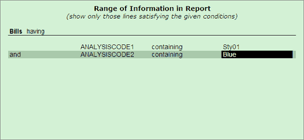

The Range of Information in Report sub-screen is as shown.

Under Bills having, select the required criteria. You may select the fields from the Field Info list, operator from the Range of Info. list and logical operator from the Condition list. The operators available are based on data type.
For string type – containing, ending with, NOT containing, NOT ending with, NOT starting with and starting with
For numeric type – equal to, greater than, lesser than and NOT equal to
The logical operators – End of List, and and or
The report is filtered based on the criteria you specify.